Para que serve: juntar tudo o que entra e sai do seu dinheiro num lugar só, e responder duas perguntas: quanto eu tenho hoje? e como o mês vai fechar?
O que você vê:
No topo: o nome do app, o seletor de mês, o filtro Conta: (para olhar uma conta só ou Todas as contas) e o botão ⚙️, que abre o menu de opções. No computador também aparecem Conectar Google Drive, Contas, Backup e o botão de tema claro/escuro. No celular esses quatro ficam dentro do menu ⚙️.
Quatro abas (na barra de baixo no celular): Visão geral, Lançamentos, Orçamento e Metas e fixos.
O botão + (Registro rápido): anota um gasto ou uma receita em poucos segundos, de qualquer aba, menos de Lançamentos (lá o formulário já está na tela).
Faixas coloridas abaixo do topo: contagem do teste grátis, aviso de que o teste terminou, Nova versão disponível (toque em Atualizar), aviso de contas que vencem e aviso de problema com o Google Drive. Só aparecem quando há algo a dizer.
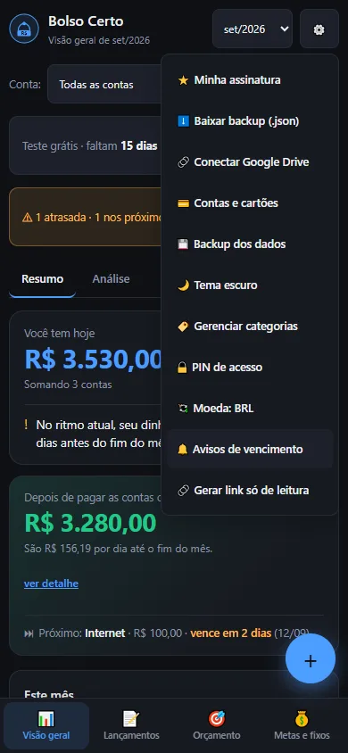
O menu ⚙️ no celular.
O menu ⚙️ reúne: Minha assinatura, Baixar backup (.json), Gerenciar categorias, PIN de acesso, Moeda: BRL (toque para trocar de moeda), Avisos de vencimento e Gerar link só de leitura. No celular, ainda traz Conectar Google Drive, Contas e cartões, Backup dos dados e o tema.
Dicas:
Toda ação que muda seus dados mostra um aviso rápido embaixo da tela. Quando ele traz o botão Desfazer, você tem alguns segundos para voltar atrás.
Os dados ficam no seu aparelho. O app funciona sem internet depois de aberto uma vez.
Visão geral
Para que serve: mostrar, sem você mexer em nada, como está o mês selecionado. Tem duas sub-abas: Resumo (a resposta rápida) e Análise (para investigar).
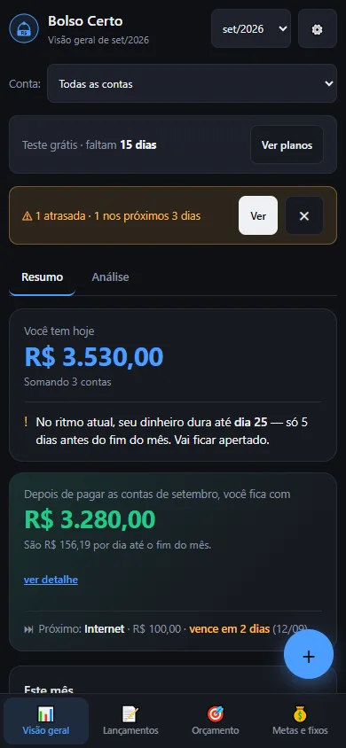
A aba Visão geral, sub-aba Resumo.
O que você vê em Resumo:
Você tem hoje: o dinheiro que está nas suas contas agora, com uma frase dizendo se ele deve durar até o fim do mês. Se você ainda não informou o saldo das contas, o app mostra o resultado do mês até agora e avisa.
Fim do mês: “Depois de pagar as contas de setembro, você fica com R$ X” (ou “faltam R$ X”). É o que sobra depois de pagar o que ainda está em aberto neste mês. Toque em ver detalhe para ver a conta passo a passo. No fim do card, a linha “Próximo” mostra a próxima conta a vencer.
Este mês: Entrou, Saiu e Sobrou. Se o mês anterior fechou com sobra ou falta, esse valor é somado ao “Sobrou”; toque em ver como foi calculado para conferir.
Orçamento em risco: categorias que já usaram 80% ou mais do limite. Toque numa linha para ver os lançamentos dela.
Para onde foi o dinheiro: gráfico dos gastos do mês por categoria.
Saldo por conta: quanto há em cada conta (só aparece se você informou o saldo inicial de alguma). Faturas de cartão em aberto: quanto já foi gasto no ciclo atual de cada cartão (só aparece se houver cartão cadastrado).
Orçamento total do mês e Maiores gastos do mês.
O que você vê em Análise:Projeção de saldo (estimativa até dezembro), Últimos 6 meses, Evolução do saldo, Contas fixas vs. gastos do dia a dia e Comparação anual.
O card “Fim do mês”.
Dicas:
O “Fim do mês” só olha as contas do mês que você está vendo. Uma conta vencida de agosto não entra na conta de setembro, mas continua precisando ser paga com o dinheiro que você tem hoje. Ela aparece nos avisos de vencimento.
Sem saldo inicial informado, o app conta só o que já entrou ou já foi pago. A receita que ainda vai chegar aparece uma vez só, em “Ainda vai receber”. Informar o saldo inicial das contas deixa a leitura mais fiel.
Os valores são estimativas feitas com o que você lançou. Quanto mais completo o registro, mais fiel o resultado.
Lançamentos
Para que serve: registrar e consultar cada entrada e saída de dinheiro.
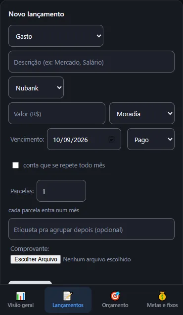
O formulário “Novo lançamento”.
O formulário Novo lançamento:
Tipo:Gasto, Receita ou Transferência entre contas (move dinheiro de uma conta sua para outra, sem contar como gasto nem receita).
Descrição, Conta, Valor (R$) (aceita vírgula: 47,90) e Categoria.
Vencimento: a data do lançamento. Para um gasto que já aconteceu, é o dia em que você pagou.
Situação: Pago (o dinheiro já saiu ou entrou) ou Pendente (ainda vai acontecer). Pendente que passa da data vira Vencido sozinho.
conta que se repete todo mês: marca o gasto como fixo (aparece no gráfico de contas fixas). Não cria lançamentos automáticos.
Parcelas: cada parcela entra num mês. O valor digitado é o de cada parcela. Só vale para gasto.
Etiqueta (para agrupar depois, opcional) e Comprovante: (uma foto, opcional).
Adicionar salva. Ao editar um lançamento, o botão Cancelar edição aparece.
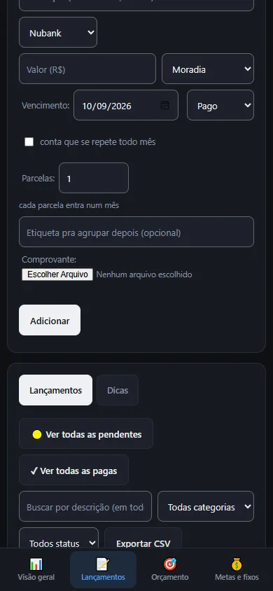
A lista de lançamentos, com busca e filtros.
A lista: duas abas, Lançamentos e Dicas. Em Dicas há dois blocos: Para você agora (tirado dos seus dados) e Boas práticas (conselhos gerais).
Ver todas as pendentes e Ver todas as pagas: mostram a lista inteira, de todos os meses, em vez de só o mês selecionado.
Busca por descrição (em todos os meses), filtros de categoria (Todas categorias) e de situação (Todos status), e o período De: / Até: (use Limpar período para voltar).
Em cada linha: Marcar como pago (✓), Duplicar (⧉), Editar (✎), Ver comprovante (📎, se houver) e Excluir (×). Excluir um lançamento simples mostra o aviso com Desfazer. Excluir uma compra parcelada pergunta se é só aquela parcela ou todas, e não oferece Desfazer.
Seleção em massa: marque várias linhas e use Marcar selecionados como pago ou Limpar seleção.
Exportar: Exportar CSV (planilha), Relatório PDF do mês, Relatório PDF do ano e Relatório para IR (apoio para organizar a declaração; não substitui um contador).
Dicas:
Desfazer volta só a última ação. Se você fizer duas ações seguidas, só a segunda pode ser desfeita.
Lançamentos importados de um extrato, parcelas e transferências são lançamentos normais: dá para editar e excluir.
Um lançamento antigo sem categoria aparece como “Outros”. Os dados gravados não são alterados.
Orçamento
Para que serve: definir quanto você quer gastar por mês em cada categoria e ver quanto já usou.
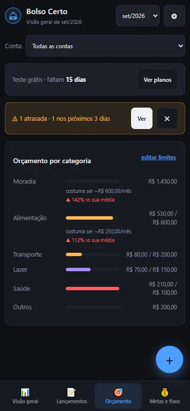
A aba Orçamento.
O que você vê: o card Orçamento por categoria, com uma barra por categoria. Toque em editar limites para digitar o limite mensal de cada uma (deixe vazio ou 0 para “sem limite”). A barra avisa quando você chega perto do limite (80%) e quando estoura.
Dicas: comece por 3 ou 4 categorias (mercado, lazer, transporte). O resumo do que passou de 80% aparece também na Visão geral, em Orçamento em risco.
Metas e fixos
Para que serve: guardar dinheiro para um objetivo, lembrar das contas que se repetem todo mês e simular uma economia.
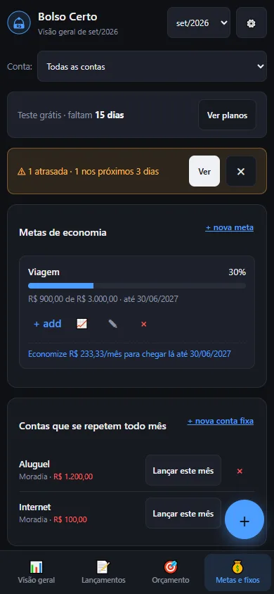
A aba Metas e fixos.
Metas de economia: + nova meta pede nome, valor alvo e prazo (Criar meta). Em cada meta, + add soma um valor guardado (isso também lança um gasto “Meta: nome” na primeira conta da lista, sem Desfazer; digite os centavos com ponto, a vírgula ainda não é aceita nesse campo) e o gráfico 📈 mostra a evolução.
Contas que se repetem todo mês: + nova conta fixa guarda um modelo (aluguel, internet, salário). O app não lança sozinho: todo mês, toque em Lançar este mês. O lançamento entra no dia 5 do mês selecionado, na primeira conta da sua lista; ajuste depois com Editar se precisar.
Simulador de economia: uma calculadora (valor por mês × número de meses, sem juros). Não usa os seus dados.
Contas e cartões
Para que serve: cadastrar onde seu dinheiro fica (banco, carteira, cartão) e informar quanto há em cada uma.
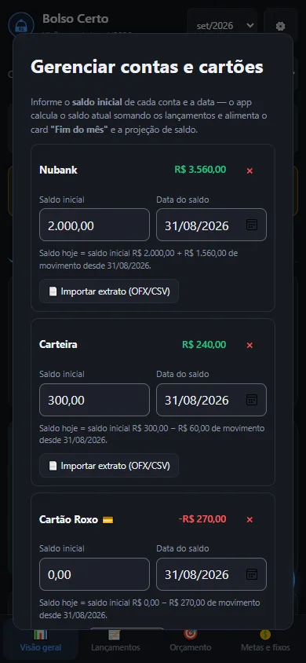
A janela de contas e cartões.
O que você vê em Gerenciar contas e cartões:
Por conta: Saldo inicial e Data do saldo. O app soma os lançamentos pagos depois dessa data e calcula o saldo de hoje. É isso que alimenta Você tem hoje e Fim do mês.
É cartão de crédito: informe o dia em que a fatura fecha (Fecha dia) e o dia em que vence (Vence dia). A Visão geral passa a mostrar a fatura em aberto.
Importar extrato (OFX/CSV): dentro de cada conta, lê o arquivo do banco (veja a tarefa de importação).
Para criar uma conta nova, digite o nome e toque em Adicionar conta. O × remove a conta.
Dicas: o nome da conta é o que liga os lançamentos a ela. Evite trocar o nome de uma conta que já tem lançamentos.
Categorias
Para que serve: agrupar os gastos. O app já vem com categorias prontas; você pode criar, renomear e excluir.
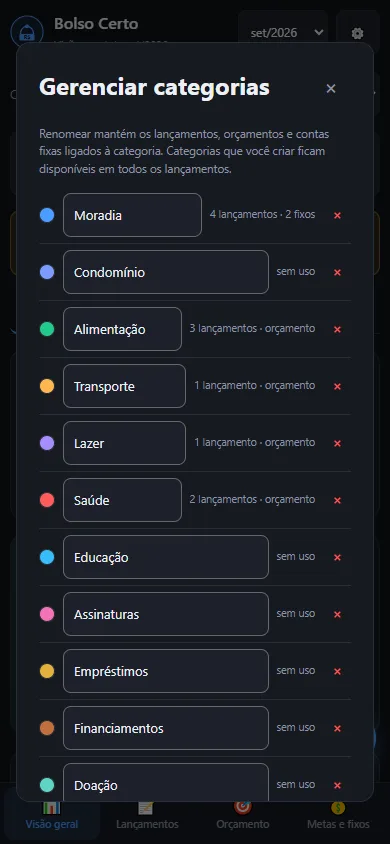
A janela de categorias.
O que você vê em Gerenciar categorias (menu ⚙️): cada categoria com sua cor e quantos usos tem. Renomear mantém os lançamentos, orçamentos e contas fixas ligados a ela. Criar usa uma cor automática. Excluir uma categoria que tem uso pergunta para qual outra mover tudo (Mover e excluir). A categoria “Outros” não pode ser excluída.
Avisos de vencimento
Para que serve: lembrar das contas pendentes antes que atrasem.
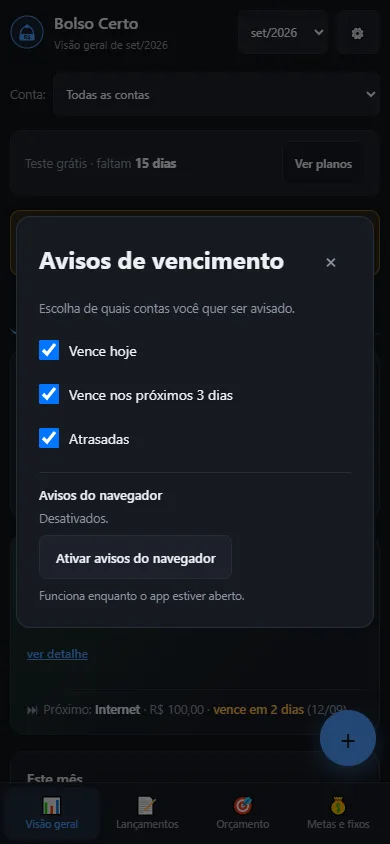
A janela de avisos.
Em Avisos de vencimento (menu ⚙️) você escolhe de quais quer ser avisado: Vence hoje, Vence nos próximos 3 dias e Atrasadas.
O aviso aparece numa faixa no topo, em qualquer aba. Ver leva à lista das pendentes do mês; o ✕ esconde o aviso até amanhã (ou até surgir uma conta nova na janela).
Ativar avisos do navegador liga a notificação do aparelho. Ela só funciona enquanto o app está aberto. Com o app fechado, o aviso não chega.
O app avisa, mas não paga nada e não faz débito automático no banco. Marcar como pago é sempre com você.
Backup, Google Drive, PIN e moeda
Para que serve: não perder seus dados, usar em mais de um aparelho e trancar a tela.
Backup em arquivo:Baixar backup (.json) (menu ⚙️) gera um arquivo com todos os seus dados. Funciona mesmo depois que o teste grátis acaba. No painel Backup dos dados (botão Backup) há também Baixar backup completo (.json), Baixar comprovantes anexados e Importar backup:. Importar valida o arquivo antes de mexer em qualquer coisa e recusa o que não for um backup do Bolso Certo. Importar substitui o que o arquivo traz; o que não vem no arquivo (por exemplo, categorias, num backup antigo) é mantido. Importar não é permitido depois que o teste acaba. Depois de importar, o Desfazer anterior perde a validade.
Google Drive:Conectar Google Drive guarda uma cópia dos seus dados num arquivo do seu próprio Drive e a mantém atualizada sozinha. É assim que se usa o app em dois aparelhos. O Drive não junta alterações feitas nos dois aparelhos: vale a última que for salva. O app só enxerga o arquivo que ele mesmo criou. O login com Google está em fase de testes: por enquanto só funciona para quem foi liberado. Disponível em breve para todos.
Faixa vermelha do Drive:Não consegui falar com o Drive — seus dados locais estão preservados quer dizer que o app não conseguiu ler o Drive. Ele não grava nada no Drive nesse caso e mantém os dados do aparelho. Toque em Tentar de novo. Se for o arquivo do Drive que está ilegível, aparece também Substituir o Drive pelos dados deste aparelho (pede confirmação, porque troca o arquivo do Drive pelo deste aparelho). A faixa Não sincronizou — suas alterações estão salvas neste aparelho e serão enviadas na próxima tentativa quer dizer que a gravação no Drive falhou; nada se perdeu no aparelho. O botão do Drive só mostra Sincronizado com Drive depois que os dados realmente chegaram.
Pergunta “Manter ou usar o Drive”: aparece quando este aparelho tem alterações que não chegaram ao Drive e o Drive tem uma versão diferente. Manter os dados deste aparelho envia o aparelho para o Drive e substitui o que está lá. Usar os dados do Drive troca os dados do aparelho pelos do Drive; logo depois dá para Desfazer, mas só os lançamentos voltam.
PIN de acesso: uma trava de tela de 4 a 6 números. Ele não protege contra quem está com o aparelho desbloqueado e não criptografa os dados. Fica só no aparelho (não vai para o backup nem para o Drive). Não existe “trocar PIN”: remova e crie outro. Se esquecer, a tela do PIN tem Esqueci o PIN / remover proteção.
Moeda:Moeda: BRL alterna entre real, dólar e euro só para exibir. Seus valores continuam guardados em reais, e as exportações saem sempre em reais.
Gerar link só de leitura: copia um endereço que abre o app sem poder editar. Quem abrir precisa entrar com a mesma conta Google. O link não inicia o teste grátis e não grava nada no aparelho nem no Drive.
Teste grátis e assinatura
Para que serve: o app é gratuito por 15 dias. Depois, para continuar lançando, é preciso assinar.
Durante o teste, uma faixa mostra Teste grátis · faltam quantos dias restam, com o botão Ver planos.
Quando o teste termina, o app vira somente leitura: você consulta tudo, filtra, exporta CSV, PDF e backup, mas não lança nem edita. A janela Seu teste de 15 dias terminou oferece Assinar por R$ 20/mês, Continuar só consultando meus dados e Baixar backup dos meus dados. Seus dados continuam salvos.
Em Minha assinatura (menu ⚙️) você vê a situação.
Importante, nesta versão de teste: a cobrança de R$ 20/mês ainda não existe. Tocar em Assinar agora (ou em Liberar acesso (teste), em Minha assinatura) apenas libera o acesso, sem cobrar. A cobrança de verdade entra numa próxima atualização, e você será avisado antes.
Privacidade
Seus lançamentos, valores e dados pessoais ficam no seu aparelho e, se você conectar, no seu Google Drive. O app coleta apenas dados de uso anônimos e agregados para melhorar o app (por exemplo, quantas pessoas abrem o app). Seus lançamentos, valores e dados pessoais nunca saem do seu aparelho e do seu Google Drive.
Glossário
Pago
O dinheiro já saiu ou já entrou. Só lançamentos pagos mexem no saldo das contas.
Pendente
Ainda vai acontecer (uma conta a pagar ou uma receita a receber).
Vencido
Era pendente e a data já passou.
Saldo inicial
Quanto havia na conta numa data que você informa. É o ponto de partida para o app calcular o saldo de hoje.
Fim do mês
O que sobra (ou falta) no fim do mês depois de pagar as contas que ainda estão em aberto.
Fixo
Gasto que se repete todo mês (aluguel, internet).
Parcela
Uma das partes de uma compra dividida. Cada parcela vira um lançamento, um por mês.
Duplicata (conciliação)
Ao importar um extrato, o app compara com o que você já lançou. Se parece o mesmo lançamento, ele marca como “possível duplicata” para você decidir.
Somente leitura
Modo em que dá para ver e exportar, mas não lançar nem editar. Vale depois do teste grátis e no link só de leitura.
Perguntas frequentes e problemas comuns
Meu saldo não bate com o do banco
Confira, nesta ordem: (1) o Saldo inicial e a Data do saldo da conta; (2) se há lançamentos pendentes que já foram pagos (só os pagos entram no saldo); (3) se falta lançar algo; (4) se um lançamento foi duplicado. Em Importar extrato (OFX/CSV), o extrato do banco ajuda a achar o que falta.
Importei o mesmo extrato duas vezes
Não duplica por conta própria: o que já está no app é reconhecido e a janela avisa quantos “já estavam no app”. Linhas parecidas aparecem em âmbar como possível duplicata e vêm desmarcadas. Se mesmo assim algo entrou repetido, use Excluir na linha ou Desfazer logo após importar.
Troquei de celular e perdi tudo
Os dados ficam no aparelho. Se você tinha o Google Drive conectado, conecte de novo no aparelho novo: os dados do Drive passam a valer nele. Se tinha um arquivo de backup, use Importar backup:. Sem nenhum dos dois, não há como recuperar. Por isso vale baixar um backup de vez em quando.
O app não atualiza
Quando há versão nova, aparece a faixa Nova versão disponível: toque em Atualizar. Se não aparecer, feche o app por completo e abra de novo com internet.
O aviso de vencimento não chega com o app fechado
É assim mesmo: o app só avisa enquanto está aberto. Deixe o app aberto ao começar o dia ou olhe a faixa de avisos quando entrar. Notificações com o app fechado ainda não existem.
O campo de data no iPhone aparece diferente
No iPhone, o campo de data pode aparecer vazio até você tocar nele; ao tocar, abre o calendário do próprio aparelho. Por isso as datas têm uma legenda (como Data do saldo) acima do campo.
O teste acabou e eu só consigo ver
É o modo somente leitura. Você ainda consulta e exporta seus dados. Para voltar a lançar, toque em Assinar na faixa de aviso. Nesta versão, assinar apenas libera o acesso, sem cobrança.
Aparece uma faixa vermelha do Drive
Veja “Faixa vermelha do Drive” no manual de backup e Drive. Em resumo: seus dados do aparelho estão preservados; toque em Tentar de novo.
O app perguntou se mantenho os dados deste aparelho ou uso os do Drive
Escolha Manter os dados deste aparelho se o que está aqui é o mais recente, ou Usar os dados do Drive se o mais recente é o do Drive. Lembre: o Drive não junta os dois, vale uma versão só.
A parcela do dia 31 caiu no dia 28
Meses curtos não têm dia 31. A parcela cai no último dia do mês (31/01, depois 28/02, depois 31/03). Parcelas antigas, já gravadas antes dessa correção, não foram alteradas.
Um lançamento antigo aparece como “Outros”
Lançamentos muito antigos podem não ter categoria. O app mostra “Outros” no lugar, sem mudar o que está gravado. Para escolher outra, toque em Editar no lançamento.
O arquivo de backup foi recusado
O app confere o arquivo antes de importar e, se ele não parece um backup do Bolso Certo, avisa “Esse arquivo não parece um backup do Bolso Certo” e não altera nada. Use um arquivo gerado por Baixar backup (.json) e que não tenha sido editado à mão. Se o seu backup é de uma versão mais nova do app, atualize o app primeiro.
O extrato trouxe menos lançamentos do que o arquivo tem
Linhas cuja data ou valor o app não consegue ler são ignoradas. A janela de importação diz quantas, com a frase “lançamento(s) do arquivo foi/foram ignorado(s) (data ou valor inválido)”. Confira essas linhas no arquivo do banco e lance à mão, se precisar.
Antes de começar: abra o endereço do Bolso Certo no navegador do celular (Safari no iPhone, Chrome no Android).
Abra o menu de compartilhar ou o menu do navegador (no iPhone, o botão com um quadrado e uma seta; no Android, os três pontinhos).
Procure uma opção parecida com “Adicionar à Tela de Início” (iPhone) ou “Instalar app” / “Adicionar à tela inicial” (Android). O nome exato pode variar conforme o aparelho e a versão.
Confirme o nome “Bolso Certo” e toque em adicionar.
Abra o app pelo novo ícone na tela inicial.
Resultado esperado: o app abre em tela cheia, como um aplicativo, e funciona mesmo sem internet depois da primeira abertura.
Se não funcionar: confirme que está no navegador certo (no iPhone, só o Safari instala). Se a opção não aparecer, você pode usar o app normalmente pelo navegador.
2. Seus primeiros 5 minutos
Antes de começar: na primeira vez, o app mostra um guia de 3 passos. Você pode fazer por ele ou seguir estes.
Toque em Entrar nos registros.
Em Adicione sua primeira conta, digite o nome da conta (por exemplo, Nubank).
No campo Quanto tem aí hoje? (opcional), digite o saldo (por exemplo, 1.200,00). Ele é opcional, mas ajuda o app a mostrar quanto você tem de verdade.
Toque em Adicionar e continuar.
No passo 2, anote um gasto de verdade (veja a tarefa 3). Se preferir, toque em pular este passo.
No passo 3, leia a explicação da Visão geral e toque em Começar a usar.
Na Visão geral, leia de cima para baixo: Você tem hoje (quanto você tem), Fim do mês (como o mês vai fechar) e Este mês (quanto entrou e saiu).
Resultado esperado: uma conta cadastrada, um gasto anotado e a Visão geral mostrando valores.
Se não funcionar: se você tocou em pular tudo, cadastre a conta por Contas e cartões no menu ⚙️ (no computador, o botão Contas).
3. Registrar um gasto rápido
Toque no botão + (Registro rápido).
Deixe Gasto marcado.
Digite o valor em Valor (R$), por exemplo 45,00.
Digite a descrição, por exemplo “Uber”. O app sugere a categoria sozinho.
Confira a conta e a categoria.
Toque em Adicionar.
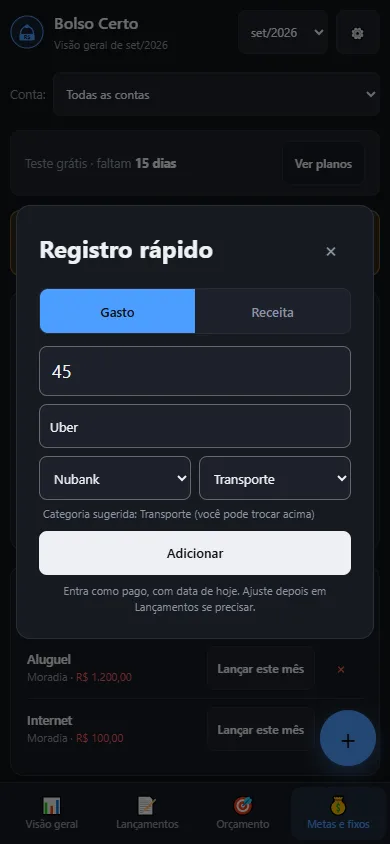
O registro rápido preenchido.
Resultado esperado: um aviso confirma o lançamento. Ele entra como pago, com a data de hoje. Se errou, toque em Desfazer no aviso.
Se não funcionar: se o botão + não aparece, você está na aba Lançamentos (use o formulário Novo lançamento) ou o teste grátis acabou.
4. Registrar uma conta para pagar depois e marcá-la como paga
Abra a aba Lançamentos.
Em Novo lançamento, deixe o tipo em Gasto e escreva a descrição (por exemplo, Energia).
Digite o valor e escolha a categoria.
Em Vencimento, escolha a data em que a conta vence.
Em situação, escolha Pendente.
Toque em Adicionar.
Quando pagar a conta, ache a linha na lista e toque em Marcar como pago (✓).
Resultado esperado: a conta fica como pendente até você marcá-la. Se a data passar, ela vira Vencido e entra nos avisos. Ao marcar como paga, o aviso traz Desfazer.
Se não funcionar: se não achar a linha, ela pode estar em outro mês: use Ver todas as pendentes.
5. Parcelar uma compra
Na aba Lançamentos, em Novo lançamento, escolha Gasto.
Escreva a descrição e escolha a conta (use a do cartão, se foi no cartão).
Digite em Valor (R$) o valor de cada parcela, não o total.
Em Parcelas:, digite o número de parcelas.
Escolha o Vencimento da primeira parcela.
Toque em Adicionar.
Resultado esperado: o app cria uma parcela por mês, com nomes como “Celular (1/3)”. A primeira fica com a situação que você escolheu e as outras ficam Pendente. O aviso diz quantas parcelas foram lançadas e não tem Desfazer.
Se não funcionar: para errar menos, confira o valor da parcela antes de tocar em Adicionar. Para apagar, use Excluir numa parcela e escolha “só esta” ou “todas”. Compra no dia 29, 30 ou 31 cai no último dia dos meses mais curtos.
6. Cadastrar uma conta que se repete todo mês
Abra a aba Metas e fixos.
No card Contas que se repetem todo mês, toque em + nova conta fixa.
Escolha o tipo (Gasto ou Receita), escreva a descrição (por exemplo, Aluguel), o valor e a categoria.
Toque em Salvar.
Todo mês, volte aqui e toque em Lançar este mês ao lado da conta.
Resultado esperado: o lançamento entra no dia 5 do mês selecionado, na primeira conta da sua lista. Ele não é lançado sozinho: é você quem toca.
Se não funcionar: se a data ou a conta não for a que você quer, toque em Editar no lançamento criado.
7. Cadastrar um cartão de crédito e acompanhar a fatura
Abra Contas e cartões (menu ⚙️; no computador, o botão Contas).
Em “Nome”, escreva o nome do cartão (por exemplo, Cartão Roxo).
Marque É cartão de crédito.
Digite o dia do fechamento e o dia do vencimento da fatura (estão no app ou na fatura do cartão).
Toque em Adicionar conta.
Ao fazer uma compra no cartão, lance o gasto escolhendo essa conta.
Veja a fatura na Visão geral, no card Faturas de cartão em aberto.
Resultado esperado: o card mostra quando a fatura fecha, quando vence e quanto já foi gasto nela.
Se não funcionar: o card só aparece com o dia do fechamento preenchido. Você pode ajustar em Fecha dia e Vence dia na própria conta.
8. Transferir dinheiro entre contas
Na aba Lançamentos, em Novo lançamento, escolha o tipo Transferência entre contas.
Escolha a conta de origem e a conta de destino.
Digite o valor e a data.
Toque em Adicionar.
Resultado esperado: o dinheiro sai de uma conta e entra na outra. A transferência não conta como gasto nem como receita.
Se não funcionar: para desfazer, use Excluir em qualquer uma das duas linhas: as duas somem juntas.
9. Importar o extrato do banco
Antes de começar: no app ou site do seu banco, procure Extrato → Exportar/Baixar → formato OFX. Salve o arquivo no aparelho. (O app também lê CSV.)
Abra Contas e cartões.
Na conta do banco, toque em Importar extrato (OFX/CSV) e escolha o arquivo.
Na janela Importar extrato, confira cada linha. As novas vêm marcadas.
Ajuste a categoria de cada linha, se quiser.
Linhas em âmbar são possível duplicata: já existe um lançamento parecido, mostrado ao lado. Elas vêm desmarcadas. Escolha manter os dois, ignorar novo ou substituir.
Toque no botão Importar seguido do número de linhas marcadas (por exemplo, “Importar 3 selecionados”).
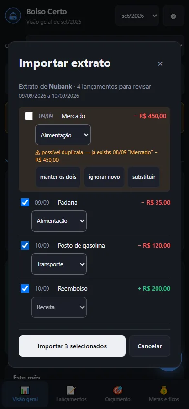
A pré-visualização do extrato, com uma possível duplicata em âmbar.
Resultado esperado: os lançamentos entram como normais, e o aviso permite Desfazer. Importar o mesmo arquivo de novo não repete o que já entrou.
Se não funcionar: a janela diz quantos lançamentos foram ignorados por data ou valor inválido, ou que “nenhum lançamento” foi encontrado (confira o intervalo exportado no banco).
10. Definir um orçamento por categoria
Abra a aba Orçamento.
No card Orçamento por categoria, toque em editar limites.
Digite o limite mensal de cada categoria que quiser controlar (por exemplo, 600,00 em Alimentação).
Cada limite é salvo ao sair do campo. Toque em Concluir quando terminar.
Resultado esperado: cada categoria mostra uma barra de uso. Passando de 80%, ela entra em Orçamento em risco na Visão geral.
Se não funcionar: deixe vazio ou 0 para “sem limite”. Um valor que não é número é tratado como “sem limite”.
11. Criar e acompanhar uma meta
Abra a aba Metas e fixos.
Em Metas de economia, toque em + nova meta.
Escreva o nome (por exemplo, Viagem), o valor alvo e o prazo.
Toque em Criar meta.
Quando guardar dinheiro, toque em + add na meta e digite o valor na janelinha que abre. Use só números e ponto para os centavos (por exemplo, 50.50): a vírgula ainda não é aceita aqui.
Toque no gráfico 📈 para ver a evolução.
Resultado esperado: a meta mostra a porcentagem alcançada e quanto economizar por mês para chegar no prazo.
Se não funcionar: o valor adicionado também vira um gasto (“Meta: Viagem”, categoria Outros) na primeira conta da sua lista, para o dinheiro sair do saldo. Esse aviso não tem Desfazer; se errar, exclua o gasto em Lançamentos e ajuste a meta.
12. Criar ou renomear uma categoria
Abra o menu ⚙️ e toque em Gerenciar categorias.
Para criar: digite o nome (até 30 letras) em “Nova categoria” e toque em Adicionar.
Para renomear: edite o nome na linha da categoria.
Para excluir: toque no × da linha; se a categoria tem uso, escolha para onde mover os lançamentos e toque em Mover e excluir.
Resultado esperado: a categoria aparece em todos os formulários. Renomear mantém os lançamentos ligados.
Se não funcionar: nomes repetidos, vazios ou reservados (como “Receita”) são recusados, com um aviso em vermelho.
13. Ligar e desligar os avisos de vencimento
Abra o menu ⚙️ e toque em Avisos de vencimento.
Marque ou desmarque Vence hoje, Vence nos próximos 3 dias e Atrasadas.
Se quiser a notificação do aparelho, toque em Ativar avisos do navegador e permita quando o aparelho perguntar.
Resultado esperado: a faixa de avisos aparece no topo quando houver conta na janela escolhida. A notificação só aparece com o app aberto.
Se não funcionar: se você negou a permissão, é preciso liberar nas configurações do navegador. A faixa no topo funciona sem a permissão.
14. Conectar o Google Drive e usar em dois aparelhos
Aviso: o login com Google está em fase de testes. Por enquanto só funciona para quem foi liberado. Disponível em breve para todos. Se aparecer uma tela de acesso negado ou de app não verificado, é por isso.
No primeiro aparelho, abra o menu ⚙️ (ou use o botão no topo) e toque em Conectar Google Drive.
Entre com sua conta Google e aceite o acesso.
Espere o botão mostrar Sincronizado com Drive.
No segundo aparelho, repita os passos 1 e 2 com a mesma conta Google.
Os dados do Drive passam a valer no segundo aparelho. Daí em diante, o que você mudar num aparelho sobe sozinho.
Resultado esperado: os dois aparelhos mostram os mesmos dados. O Drive não junta alterações feitas nos dois aparelhos ao mesmo tempo: vale a última que for salva. Use um aparelho de cada vez e espere o status ficar em Sincronizado com Drive antes de trocar.
Se não funcionar:
Faixa vermelha Não consegui falar com o Drive — seus dados locais estão preservados: seus dados do aparelho estão salvos. Toque em Tentar de novo. Se a faixa trouxer Substituir o Drive pelos dados deste aparelho, use só se o Drive não tiver nada importante, porque o arquivo dele será trocado.
Faixa Não sincronizou — suas alterações estão salvas neste aparelho e serão enviadas na próxima tentativa: nada se perdeu; ele tenta de novo sozinho.
Janela “Este aparelho tem alterações que não foram para o Drive”: se o que está aqui é o mais novo, escolha Manter os dados deste aparelho; se o mais novo está no Drive, escolha Usar os dados do Drive (e use Desfazer logo depois, se mudar de ideia; só os lançamentos voltam).
15. Fazer e restaurar um backup
Para fazer:
Abra o menu ⚙️ e toque em Baixar backup (.json).
Guarde o arquivo num lugar seguro (e-mail para você mesmo, nuvem, computador).
Para restaurar:
Toque em Backup (no celular, em Backup dos dados no menu ⚙️).
Em Importar backup:, escolha o arquivo.
Leia o aviso: importar substitui o que o arquivo traz neste aparelho. Confirme.
Resultado esperado: seus lançamentos, contas, metas e orçamentos voltam como estavam no arquivo. O que não vem no arquivo (por exemplo, categorias num backup antigo) é mantido.
Se não funcionar: se aparecer “Esse arquivo não parece um backup do Bolso Certo”, nada foi alterado: use um arquivo gerado pelo app. Com o teste grátis encerrado, baixar backup funciona, mas importar não.
16. Gerar o relatório do mês, do ano e para o IR
Abra a aba Lançamentos.
Escolha o mês no topo da tela (e, se quiser, uma conta em Conta:; o relatório do mês respeita essa conta).
Toque em Relatório PDF do mês.
Para o ano, escolha o ano ao lado e toque em Relatório PDF do ano.
Para o IR, toque em Relatório para IR.
Resultado esperado: o PDF é baixado. Os relatórios do ano e do IR somam todas as contas. O relatório para IR é um apoio para organizar suas informações e não substitui um contador.
Se não funcionar: procure o arquivo na pasta de downloads do aparelho. Para uma planilha, use Exportar CSV.
17. Compartilhar um link só de leitura
Abra o menu ⚙️ e toque em Gerar link só de leitura.
O app copia o endereço e mostra uma mensagem com ele.
Envie o endereço para a pessoa.
Resultado esperado: quem abrir o link vê os dados sem poder editar. A pessoa precisa entrar com a mesma conta Google, pois os dados vêm do seu Drive. O link não inicia o teste grátis e não grava nada.
Se não funcionar: o link mostra o que está no seu Google Drive. Sem o Drive conectado, quem abrir o link num aparelho sem dados vê o app vazio.
18. Proteger o app com PIN
Abra o menu ⚙️ e toque em PIN de acesso.
Digite um PIN de 4 a 6 números.
Na próxima vez que abrir o app, ele pede o PIN.
Resultado esperado: o app abre numa tela de PIN. É uma trava de tela: ela esconde o app de quem pega seu aparelho já desbloqueado de relance, mas não é uma segurança forte nem criptografa os dados. O PIN fica só neste aparelho.
Para trocar ou remover: não existe “trocar PIN”. Toque em PIN de acesso de novo e confirme a remoção; depois crie outro. Se esquecer, toque em Esqueci o PIN / remover proteção na tela do PIN.
19. O que acontece quando o teste acaba e como assinar
Durante o teste, a faixa Ver planos mostra quantos dias faltam.
Ao terminar, aparece Seu teste de 15 dias terminou. Você pode tocar em Continuar só consultando meus dados e usar o app para ver e exportar.
Para voltar a lançar, toque em Assinar por R$ 20/mês (ou em Assinar na faixa de aviso) e depois em Assinar agora.
Resultado esperado: o app volta a aceitar lançamentos.
Importante: nesta versão de teste, Assinar agora apenas libera o acesso. A cobrança de R$ 20/mês ainda não existe e entra numa próxima atualização.
Se não funcionar: seus dados nunca são apagados pelo fim do teste. Se quiser sair, baixe o backup em Baixar backup dos meus dados.